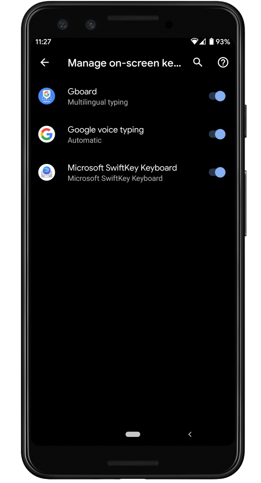
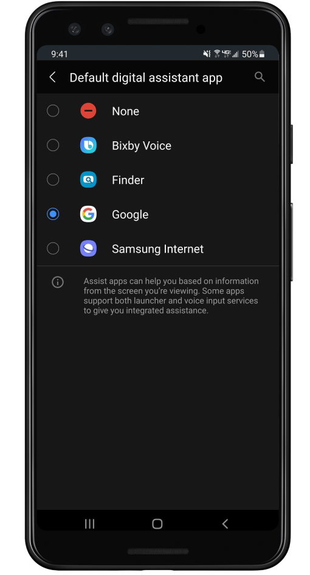
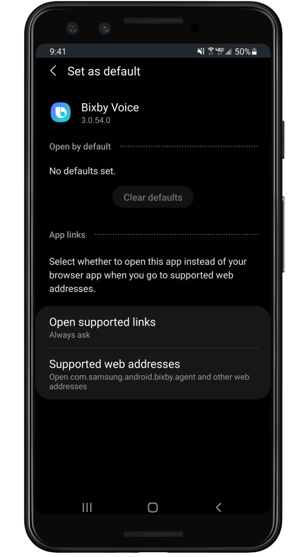
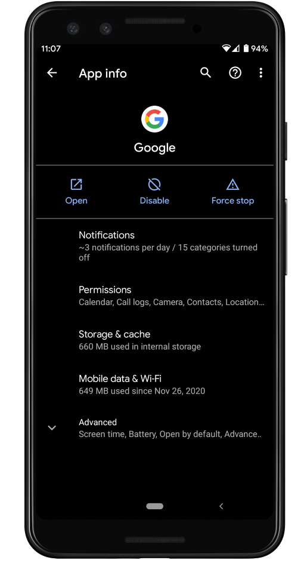

When trying to use Voice input, you may get the following error message: "You must have Google Voice Typing enabled on your device". Following the steps below may solve this problem.
1) In your device's Settings app, locate the "Manage on-screen keyboards" section. Ensure that "Google voice typing" is enabled:
2) In your device's Settings app, locate the "Default digital assistant app" section. Ensure that "Google" is selected:
3) If your device has Bixby, Alexa, or any other third-party digital assistant installed, locate the app's "Set as default" or "Open by default" screen. Once you've located it, tap the "Clear defaults" button:
4) Locate the "App info" screen for the Google app. Ensure that the Google app is enabled:
